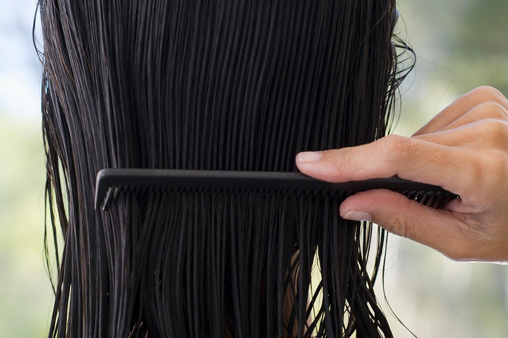
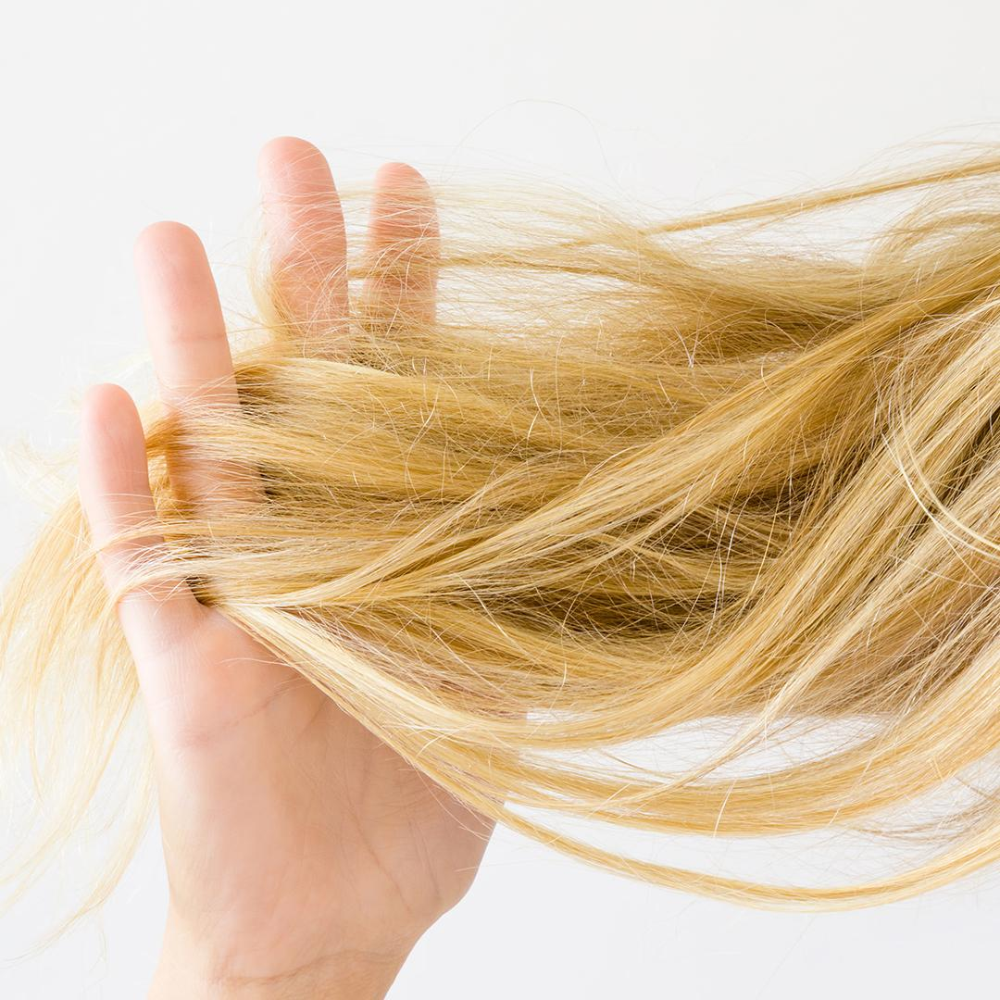
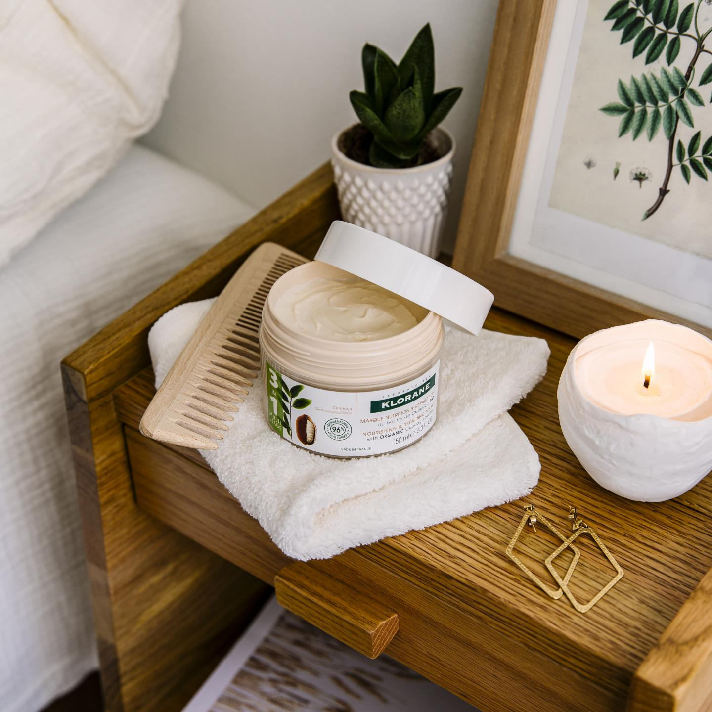

4 бюти съвета за възстановяване на много суха и увредена коса
Съвети за красота
Заплитащи се и цъфтящи краища, липса на блясък… независимо дали кoсата ви е много суха или е увредена вследствие на прекомерно третиране, ние сме тук, за да помогнем! Предлагаме ви 4 натурални решения за красива, мека като коприна коса.
1. Тайната на красивата коса: без цъфтящи краища
Каква е голямата тайна на меката, блестяща коса? Добрата и постоянна грижа . Краищата на косата трябва редовно да се подстригват, за да може косата да възстанови своята сила и жизненост. Така ще избегнете накъсани, заплитащи се краища. Новата подстрижка е основата за здрава и красива коса. Има дори твърдения, че косата ни трябва да се подстригва спрямо фазите на луната. Лунен съвет за грижа на косата? Легенда разказва, че фазите на луната имат въздействие върху растежа и силата на косата…, но ефективността на този метод не е доказана!

2. Без накъсване по време на измиване
Много сухата коса има увреден космен фоликул, често е изтощена и късаща се. Ето няколко съвета, които ще ви гарантират, че миенето на изтощената коса повече няма да бъде изпитание.
Редувайте два допълващи се ритуала за миене на коса: на всяко второ измиване заместете своето обичайно дуо - шампоан + възстановяваща маска със самостоятелна употреба на балсам, например Klorane Подхранващ и възстановяващ балсам с органично масло от Купуасу, за да избегнете лишаването на косата от необходимите й натурални масла. Ефективността на измиване и подхранване на този метод е тествана и доказана!
Когато нанасяте балсам, разрешете косата под душа с едър гребен, после отмийте. Това ще помогне да се ограничи накъсването, особено ако след това внимателно подсушите косата си с кърпа, без да разтривате.
3. Опитайте възстановяваща грижа и през нощта за много суха коса
За да възстановите много сухата коса, опитайте грижа през цялата нощ с Klorane Подхранващa и възстановяващa маска за коса с органично масло от купуасу. Вечерта нанесете обилно количество от маската по дължините на косата, увийте я с кърпа и останете с нея, докато спите. На следващия ден измийте старателно косата и я оставете да изсъхне сама. Органичното масло от Купуасу е 1,5 пъти по-подхранващо от маслото от карите, то интензивно ще възстанови косата ви. Довиждане, коса като слама! Здравей, мека коса! И тъй като Купуасу се култивира чрез метода за комбинирано отглеждане на тревни и дървесни култури (агролесовъдство) в Амазонскaта тропическа гора, вие ще допринесете с едно добро дело за благополучието на планетата! #FeelGoodActGood
4. Изтощена коса: вземете максимума от възстановяващата сила на маската за коса
Вземете назаем техники от спа центровете, за да подсилите подхранващия ефект на маската за коса! За да улесните абсорбцията на активните съставки, покрийте косата си с топла влажна кърпа, след като нанесете маската. Влажната кърпата ще отвори кутикула на косъма и маската ще подейства в дълбочина. Вземете малка кърпа, намокрете я и я оставете в микровълновата печка за 1 минута. Проверете температурата: кърпата трябва да е много топла, но не и прекалено гореща. Увийте я около косата, след като сте нанесли обилно количество от маската. Релаксирайте и я оставете да подейства за 10 минути… Готово!
Оставете заявка за консултация
